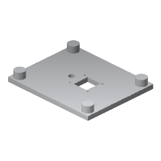
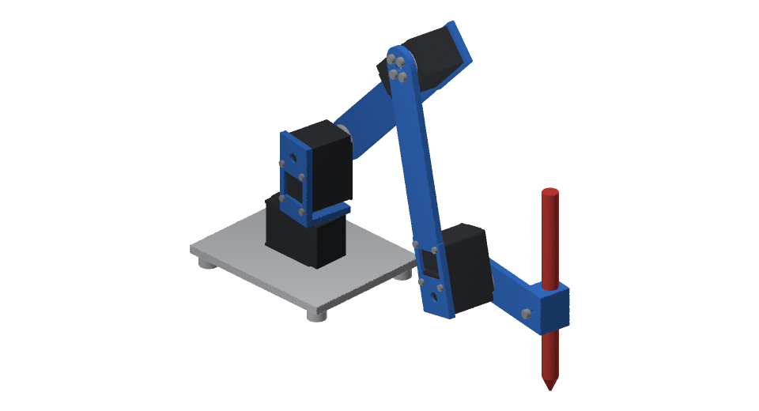

RobotDSL original / 4-joint robot arm
Drawing Arm
CC BY 4.0 · Open design

Drag to rotate. Use arrow keys to orbit, plus and minus to zoom, and Home to reset.
A drawing arm with a printed structure and a pen holder.
- Assembled mass
- 0.37 kg
- Printed pieces
- 5 / 5 designs
- Materials
- PLA
01 / Fabrication
Print files 5 parts · 5 pieces
Drag a part to rotate.
STL for slicing · STEP for editing

02 / Shopping list
Buy these parts
Quantities for one robot.
Table mounting
2 ×
Table clamps
Place one on each side of the base servo. Required to prevent tipping.
Drawing tool
1 ×
A pen
6.6–10 mm diameter where held.
Screws
Socket head cap screws
ISO 4762
| Size (mm) | Qty |
|---|---|
| M2 × 8 | 4 |
| M3 × 6 | 16 |
| M2 × 6 | 12 |
| M3 × 12 | 1 |
Electronics still to choose
These are also needed to run the robot. This guide does not yet provide a complete electronics shopping list.
- Computer
- Runs the software that controls the robot.
- Servo adapter
- Connects the computer to the 4 joint motors through their serial bus.
- 12 V power supply
- Provides power to the joint motors.
The design keeps these components off the arm. Specific products and connections have not been selected.
03 / Build notes
Before you assemble
Set the joint zero
Arm straight up.
Keep the supplied servo horns fitted.Clamp the base
2 clamps · one on each side of the base servo
The extended arm tips over without them.Position the pen
Tip 60 mm below the level arm
Tighten the M3 screw under the holder.Drawing area
A4 · 96–359 mm from base axis
Place the long side of the sheet across the arm.Full design notesDimensions, fitting instructions, simulation results
Design
The RobotDSL Drawing Arm is the RobotDSL Team's own design, drawn as CAD in code: a drawing arm of four joints on four Feetech STS3215 (12 V, ST-3215-C018) servos, 0.37 kg in all, holding a pen. Its pen upright, it draws on an A4 sheet laid ahead of it, its long side across, anywhere from 96 to 359 mm from its base's axis. Every piece below prints without supports, as its file lies, on a printer's bed of 250 × 210 mm, 220 mm high. You can find it in the Studio's parts library, among the attachments.
Mounting & electronics
Stretched out level with its pen, 0.02 kg, its centre of mass comes 75 mm beyond the outline its feet stand in, turned the way it comes nearest: clamp its base plate to the table, a clamp each side of the base's servo, or it tips over. What drives its servos: a computer, an adapter for the servos' serial bus and a 12 V supply, which the arm does not carry; the design names no product of them.
Joint alignment
Each servo's horn is fitted as it comes: set each joint's zero in its servo, the arm straight up.
Pen
Slide the pen through the pen holder until its point stands 60 mm under the arm when the arm is level ahead, then turn the M3 screw under the holder against it.
Simulated
In MuJoCo 3.15.0, each link weighing as its solids do and each servo turning as MuJoCo Menagerie's model of the Feetech STS3215 (12 V, ST-3215-C018) has it turn (up to 2.94 N m): stretched out level with its pen, 0.02 kg, its base clamped, its servos hold it within 0.0004 rad, the shoulder's turning 0.41 N m; each joint turned through its range at 0.5 rad/s, the others at zero, follows within 0.007 rad; unclamped, stretched out level and turned the way it comes nearest to tipping, it tips over; drawing its sheet's outline at 20 mm/s, its pen pressed 0.1 mm into the paper, its pen's point keeps within 0.59 mm of the line and rises 0.02 mm off the paper at most.
Complete hardware list
- 4 × Feetech STS3215 (12 V, ST-3215-C018)
- 2 × clamps that hold the base plate to the table
- A pen, 6.6 to 10 mm across where it is held
- 4 × M2 x 8
- 16 × M3 x 6
- 12 × M2 x 6
- 1 × M3 x 12
Licence & attribution
Designed by the RobotDSL Team
The files are published under CC BY 4.0, crediting the RobotDSL Team.
Open Studio